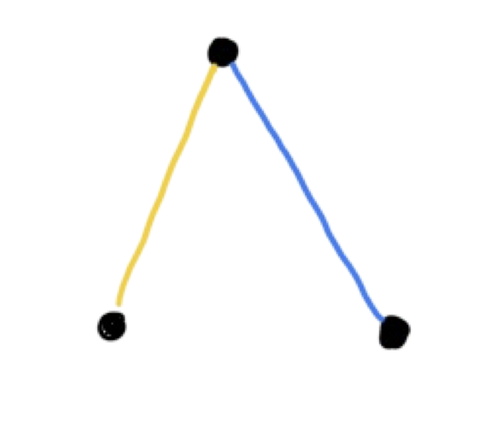
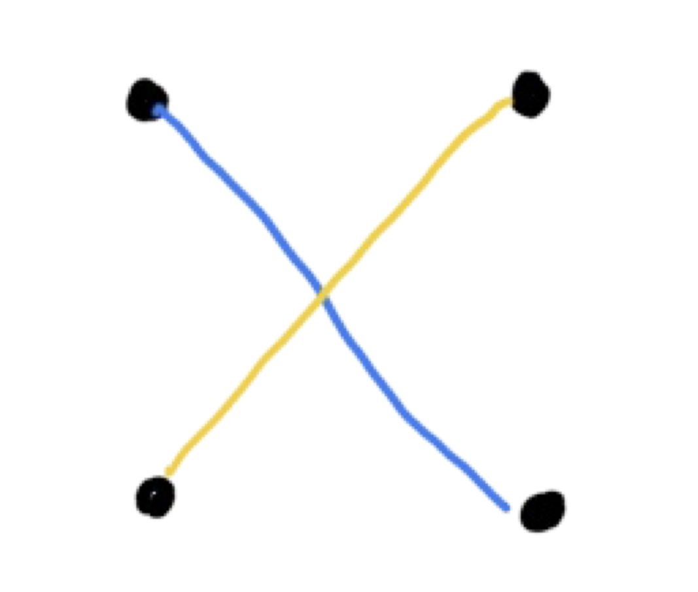
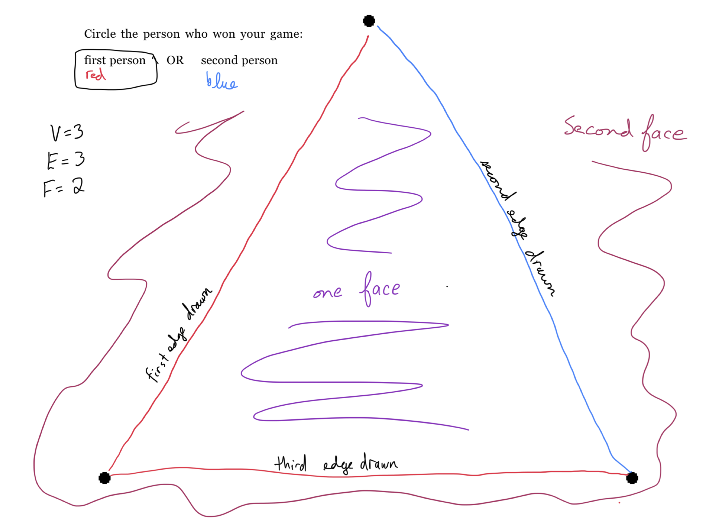

Section 2.3 Criss-Cross Game
Below we will describe a mathematically-curious game. The original activity can be found at Math Circles Activity Site and was authored by Sam Vandervelde.
1
mathcircles.org- Be the last player to add a line segment to the board. (This player is the winner.)
- Predict who will win and who will lose based on the set up of the game.
- Spot patterns and justify them.
Subsection 2.3.1 Rules
To play, two players will alternate turns until one of the players is unable to make a move. Note: You can play this by yourself. This can be done by writing in two different colors. Designate one color as player one and the other as player two. To begin, decide who will play first then create a game board by drawing \(x\) number of dots. On each turn, draw a segment between any pair of dots which does not intersect any of the existing segments. This is illustrated in Figure 2.3.1


The winner is the last person able to make a legal move. A completed game is shows in Figure 2.3.2.

Make a copy of the Table 2.3.3 score table based on the number of dots used. The first row has been filled in. These values can be seen based on the completed game illustrated in Figure 2.3.2. However, in order to complete the rest of the table, you will need the following definitions:
- The dots are called vertices and denoted by \(V\)
- The segments are called edges and denoted by \(E\)
- The outlined regions are called faces and denoted by \(F\)
| \(V\) | \(E\) | \(F\) | Winner |
| \(3\) | \(3\) | \(2\) | First Player |
| \(4\) | \(\) | \(\) | |
| \(5\) | \(\) | \(\) | |
| \(6\) | \(\) | \(\) | |
| \(7\) | \(\) | \(\) | |
| \(8\) | \(\) | \(\) |
Based on the table, what patterns do you see? Can you prove/justify those patterns? On a piece of paper try to write down the patterns and justifications.